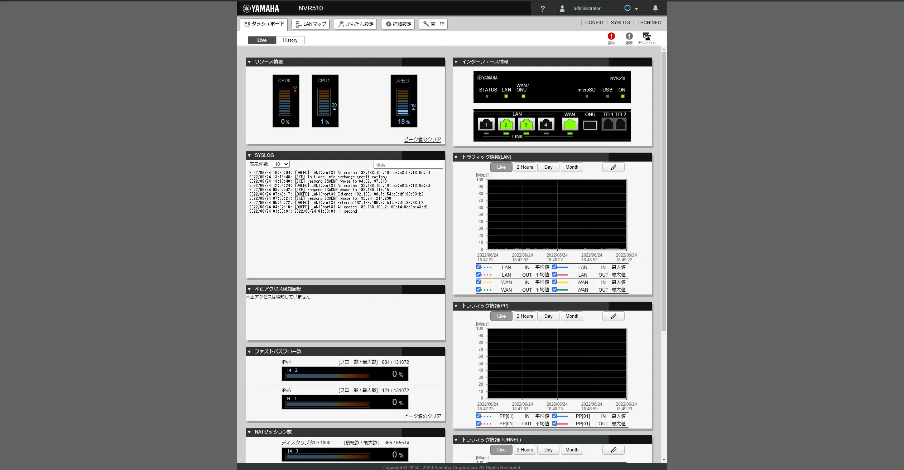

Portainer🔑
Portainerはオープンソースの Webブラウザベースで動作する、DockerのGUI管理ツールです。 CLIで操作するDockerをGUI上で操作することが可能です。
アクセスDynmap
DynmapはMinecraftのワールドをGoogleMAPのように表示させるWebアプリです。 現在オンラインのMinecraftワールドのプレイヤーをリアルタイムに表示します。
アクセスcode-server🔑
code-serverはオープンソースのVisualStudio Code互換Webアプリです。 Web上でVisualStudio Codeを利用してコーディング作業等が可能です。
アクセス

YAMAHA NVR510🔑
NVR510はYAMAHA製のネットワークルータです。 WebGUI上でルータ設定が可能で、通常のインターネット接続はMAP-E、公開サーバはPPPoEに振り分けています。
アクセス👷工事中👷
筋肉はすべてを解決する。